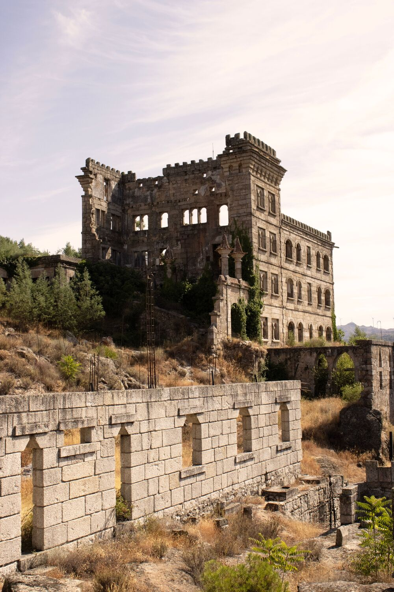
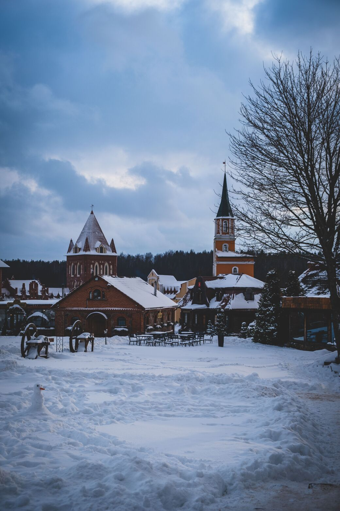
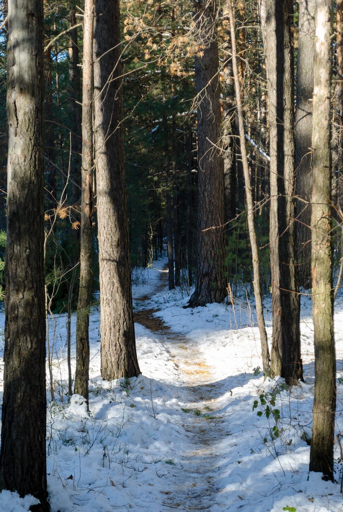

Invernalia no es solo una tierra de paisajes extremos y leyendas, sino también un reino donde la historia, la tradición y la supervivencia se entrelazan. Sus ciudades, fortalezas y parajes han sido testigos de siglos de alianzas, conflictos y costumbres ancestrales que siguen marcando la identidad del Norte.
La Antigua Fortaleza Historia

Es la edificación más antigua y emblemática de la ciudad. Sus imponentes murallas de piedra han protegido a la población desde el año 845 y hoy albergan el museo histórico local.
Ubicación
Barrio La Fortaleza (Zona Central).
¿Que se puede hacer allí?
Recorrer los torreones de piedra, realizar visitas guiadas por las salas históricas y contemplar la vista panorámica del Bosque de los Lobos desde el mirador principal.
Por qué se recomienda visitarlo
Es el punto de origen de la ciudad y el lugar perfecto para comprender las raíces culturales e históricas de los invernalianos.
Actividades y eventos
Recreaciones históricas medievales, talleres de historia antigua y exposiciones de artefactos antiguos.
Plaza del Invierno y Mercado Artesanal Cultura

El corazón social de la ciudad. Es una amplia plaza empedrada rodeada de faroles antiguos y arbolado nevado, dominada por una gran chimenea comunitaria en su centro.
Ubicación
Centro urbano de Invernalia.
¿Que se puede hacer allí?
Comprar artesanías talladas en madera, probar platos y bebidas calientes tradicionales de la región y participar en encuentros comunitarios.
Por qué se recomienda visitarlo
Refleja la calidez humana y la solidaridad que caracterizan a la población durante los meses más fríos.
Actividades y eventos
Apertura del Festival de la Primera Nieve, ferias navideñas e invernales y conciertos de música folclórica al aire libre.
Senderos del Bosque de los Lobos Naturaleza

Una reserva natural de pinos centenarios y colinas nevadas que bordea la ciudad. Es un ecosistema protegido reconocido por la diversidad de su fauna autóctona.
Ubicación
Periferia norte y oeste de la ciudad (Bosque de los Lobos).
¿Que se puede hacer allí?
Hacer senderismo con raquetas para nieve, avistamiento de fauna silvestre, fotografía de paisajes y caminatas guiadas hacia los arroyos congelados.
Por qué se recomienda visitarlo
Permite experimentar la conexión directa y el respeto por la naturaleza que define la identidad invernaliana.
Actividades y eventos
Caminatas nocturnas bajo las estrellas, talleres de rastreo e interpretación de flora y expediciones de ecoturismo.